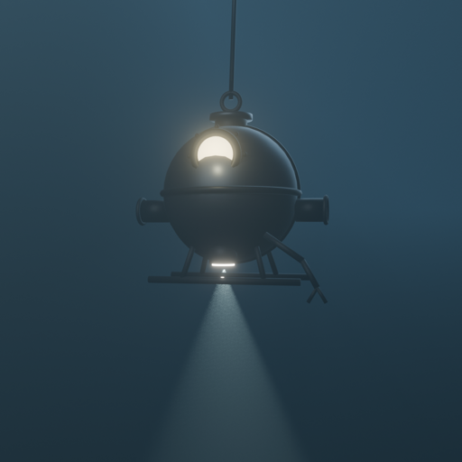

Трос
УстановитьОткройте эту страницу в Safari на iPhone. После нажатия вернитесь на экран «Домой» — игра появится там. Сборка 1.

Откройте эту страницу в Safari на iPhone. После нажатия вернитесь на экран «Домой» — игра появится там. Сборка 1.